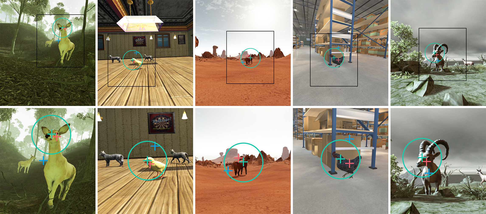

DGaze: CNN-Based Gaze Prediction in Dynamic Scenes
Zhiming Hu, Sheng Li, Congyi Zhang, Kangrui Yi, Guoping Wang, Dinesh Manocha
IEEE Transactions on Visualization and Computer Graphics (TVCG, IEEE VR 2020 Journal-track), 2020, 26(5): 1902-1911.

Abstract
We conduct novel analyses of users’ gaze behaviors in dynamic virtual scenes and, based on our analyses, we present a novel CNN-based model called DGaze for gaze prediction in HMD-based applications. We first collect 43 users’ eye tracking data in 5 dynamic scenes under free-viewing conditions. Next, we perform statistical analysis of our data and observe that dynamic object positions, head rotation velocities, and salient regions are correlated with users’ gaze positions. Based on our analysis, we present a CNN-based model (DGaze) that combines object position sequence, head velocity sequence, and saliency features to predict users’ gaze positions. Our model can be applied to predict not only realtime gaze positions but also gaze positions in the near future and can achieve better performance than prior method. In terms of realtime prediction, DGaze achieves a 22.0% improvement over prior method in dynamic scenes and obtains an improvement of 9.5% in static scenes, based on using the angular distance as the evaluation metric. We also propose a variant of our model called DGaze_ET that can be used to predict future gaze positions with higher precision by combining accurate past gaze data gathered using an eye tracker. We further analyze our CNN architecture and verify the effectiveness of each component in our model. We apply DGaze to gaze-contingent rendering and a game, and also present the evaluation results from a user study.Presentation Video
Demo Video
Links
Doi: doi
Paper: paper.pdf
Code: code
Dataset: dataset
Slides: slides.pdfExperimental scenes: experimental scenes
Supplementary materials: supplementary materials
BibTeX
@article{hu20dgaze,
title = {DGaze: CNN-Based Gaze Prediction in Dynamic Scenes},
author = {Hu, Zhiming and Li, Sheng and Zhang, Congyi and Yi, Kangrui and Wang, Guoping and Manocha, Dinesh},
journal = {IEEE Transactions on Visualization and Computer Graphics},
volume = {26},
number = {5},
pages = {1902--1911},
year = {2020},
doi = {10.1109/TVCG.2020.2973473}}